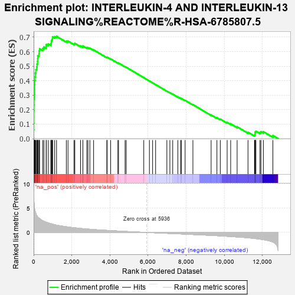
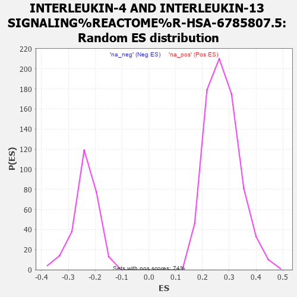

| | | Dataset | carrankstim |
| Phenotype | NoPhenotypeAvailable |
| Upregulated in class | na_pos |
| GeneSet | INTERLEUKIN-4 AND INTERLEUKIN-13 SIGNALING%REACTOME%R-HSA-6785807.5 |
| Enrichment Score (ES) | 0.7053859 |
| Normalized Enrichment Score (NES) | 2.5671382 |
| Nominal p-value | 0.0 |
| FDR q-value | 0.0 |
| FWER p-Value | 0.0 |
Table: GSEA Results Summary

Fig 1: Enrichment plot: INTERLEUKIN-4 AND INTERLEUKIN-13 SIGNALING%REACTOME%R-HSA-6785807.5
Profile of the Running ES Score & Positions of GeneSet Members on the Rank Ordered List
| PROBE | GENE SYMBOL | GENE_TITLE | RANK IN GENE LIST | RANK METRIC SCORE | RUNNING ES | CORE ENRICHMENT | | 1 | IL13 | | | 0 | 9.497 | 0.0599 | Yes |
| 2 | PTGS2 | | | 7 | 7.416 | 0.1063 | Yes |
| 3 | OSM | | | 11 | 6.863 | 0.1494 | Yes |
| 4 | LIF | | | 12 | 6.820 | 0.1924 | Yes |
| 5 | IL10 | | | 16 | 6.417 | 0.2327 | Yes |
| 6 | IL1A | | | 19 | 6.256 | 0.2720 | Yes |
| 7 | CXCL8 | | | 32 | 5.573 | 0.3063 | Yes |
| 8 | SOCS1 | | | 43 | 5.180 | 0.3382 | Yes |
| 9 | TNF | | | 45 | 5.094 | 0.3702 | Yes |
| 10 | FOS | | | 51 | 4.863 | 0.4005 | Yes |
| 11 | FASLG | | | 74 | 4.445 | 0.4269 | Yes |
| 12 | IL4 | | | 88 | 4.289 | 0.4529 | Yes |
| 13 | FGF2 | | | 116 | 3.961 | 0.4758 | Yes |
| 14 | VCAM1 | | | 160 | 3.509 | 0.4946 | Yes |
| 15 | SOCS3 | | | 179 | 3.415 | 0.5147 | Yes |
| 16 | IRF4 | | | 206 | 3.204 | 0.5329 | Yes |
| 17 | BCL2L1 | | | 211 | 3.183 | 0.5527 | Yes |
| 18 | CDKN1A | | | 216 | 3.161 | 0.5723 | Yes |
| 19 | BATF | | | 280 | 2.934 | 0.5859 | Yes |
| 20 | BCL2 | | | 285 | 2.921 | 0.6040 | Yes |
| 21 | MAOA | | | 312 | 2.861 | 0.6200 | Yes |
| 22 | ICAM1 | | | 477 | 2.412 | 0.6224 | Yes |
| 23 | IL23R | | | 539 | 2.297 | 0.6321 | Yes |
| 24 | BIRC5 | | | 657 | 2.109 | 0.6362 | Yes |
| 25 | HSP90AA1 | | | 664 | 2.099 | 0.6490 | Yes |
| 26 | VEGFA | | | 765 | 1.957 | 0.6535 | Yes |
| 27 | CCND1 | | | 903 | 1.795 | 0.6541 | Yes |
| 28 | JUNB | | | 924 | 1.775 | 0.6637 | Yes |
| 29 | MYC | | | 928 | 1.771 | 0.6746 | Yes |
| 30 | FSCN1 | | | 957 | 1.739 | 0.6834 | Yes |
| 31 | HIF1A | | | 989 | 1.701 | 0.6917 | Yes |
| 32 | HSPA8 | | | 995 | 1.693 | 0.7020 | Yes |
| 33 | PIM1 | | | 1102 | 1.590 | 0.7037 | Yes |
| 34 | IL23A | | | 1202 | 1.495 | 0.7054 | Yes |
| 35 | IL4R | | | 1714 | 1.174 | 0.6727 | No |
| 36 | MMP9 | | | 1802 | 1.115 | 0.6729 | No |
| 37 | TNFRSF1B | | | 2117 | 0.971 | 0.6544 | No |
| 38 | CCL22 | | | 2161 | 0.954 | 0.6570 | No |
| 39 | IL12A | | | 2457 | 0.832 | 0.6391 | No |
| 40 | STAT1 | | | 2582 | 0.779 | 0.6343 | No |
| 41 | RORC | | | 2583 | 0.778 | 0.6392 | No |
| 42 | LAMA5 | | | 2790 | 0.707 | 0.6275 | No |
| 43 | HSP90B1 | | | 2848 | 0.690 | 0.6273 | No |
| 44 | MUC1 | | | 2948 | 0.658 | 0.6237 | No |
| 45 | STAT3 | | | 3144 | 0.597 | 0.6122 | No |
| 46 | FN1 | | | 3838 | 0.424 | 0.5604 | No |
| 47 | ZEB1 | | | 3855 | 0.420 | 0.5618 | No |
| 48 | TP53 | | | 4038 | 0.378 | 0.5499 | No |
| 49 | NDN | | | 4418 | 0.296 | 0.5220 | No |
| 50 | AKT1 | | | 4451 | 0.290 | 0.5214 | No |
| 51 | POU2F1 | | | 4793 | 0.215 | 0.4959 | No |
| 52 | JAK3 | | | 4851 | 0.203 | 0.4927 | No |
| 53 | BCL6 | | | 5774 | 0.026 | 0.4205 | No |
| 54 | MCL1 | | | 6069 | -0.022 | 0.3976 | No |
| 55 | IL2RG | | | 6237 | -0.053 | 0.3848 | No |
| 56 | GATA3 | | | 6395 | -0.081 | 0.3730 | No |
| 57 | ITGB1 | | | 6985 | -0.183 | 0.3279 | No |
| 58 | VIM | | | 7143 | -0.210 | 0.3169 | No |
| 59 | ANXA1 | | | 7292 | -0.235 | 0.3067 | No |
| 60 | SOCS5 | | | 7561 | -0.281 | 0.2874 | No |
| 61 | FOXO1 | | | 7704 | -0.307 | 0.2782 | No |
| 62 | TYK2 | | | 7744 | -0.313 | 0.2771 | No |
| 63 | POMC | | | 7941 | -0.346 | 0.2639 | No |
| 64 | STAT6 | | | 8350 | -0.427 | 0.2346 | No |
| 65 | TGFB1 | | | 9305 | -0.604 | 0.1635 | No |
| 66 | ITGB2 | | | 9609 | -0.668 | 0.1439 | No |
| 67 | HMOX1 | | | 9785 | -0.710 | 0.1347 | No |
| 68 | JAK2 | | | 10145 | -0.796 | 0.1115 | No |
| 69 | PIK3R1 | | | 10330 | -0.842 | 0.1024 | No |
| 70 | FCER2 | | | 10668 | -0.936 | 0.0818 | No |
| 71 | RHOU | | | 11238 | -1.104 | 0.0441 | No |
| 72 | FOXO3 | | | 11578 | -1.241 | 0.0253 | No |
| 73 | TIMP1 | | | 11602 | -1.250 | 0.0314 | No |
| 74 | ITGAM | | | 11604 | -1.251 | 0.0392 | No |
| 75 | JAK1 | | | 11613 | -1.258 | 0.0465 | No |
| 76 | IL6R | | | 11654 | -1.273 | 0.0514 | No |
| 77 | RORA | | | 11866 | -1.371 | 0.0435 | No |
| 78 | ITGAX | | | 11917 | -1.409 | 0.0485 | No |
| 79 | CEBPD | | | 12042 | -1.479 | 0.0481 | No |
| 80 | S1PR1 | | | 12542 | -1.975 | 0.0214 | No |
Table: GSEA details [plain text format]

Fig 2: INTERLEUKIN-4 AND INTERLEUKIN-13 SIGNALING%REACTOME%R-HSA-6785807.5: Random ES distribution
Gene set null distribution of ES for INTERLEUKIN-4 AND INTERLEUKIN-13 SIGNALING%REACTOME%R-HSA-6785807.5